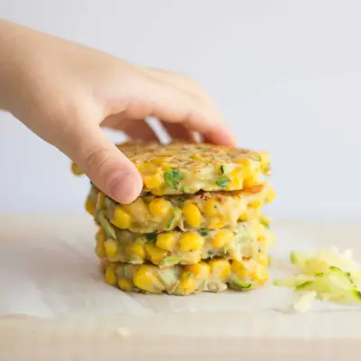

Zucchini and Corn Fritters

Ingredients
- 1 cup grated zucchini (120g weighed after squeezed)
- 1 cup corn (150g)
- 1/4 cup cheese (25g)
- 1/3 cup all purpose flour (40g)
- 1 egg, beaten
- 1/2 teaspoon baking powder
- 1/2 teaspoon cumin
- 1/2 teaspoon oregano
- 1 teaspoon lemon juice
- Olive oil for cooking
Steps
- Heat oil in a cast iron or non-stick skillet over medium-high heat.
- Working in batches, drop heaping tablespoons of batter into the skillet. Flatten slightly with the back of a spoon.
- Cook about 2 minutes on each side, until golden. Gently press down to help the mixture to bind.
Recipe by Min Kwon · Kidfriendly Meals, from MJ and Hungryman. Saved here for personal use; the original has the full notes, tips and photos. Open original